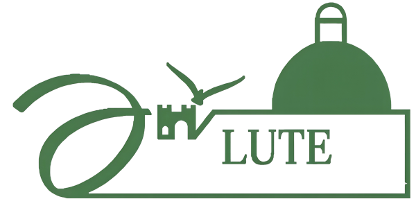
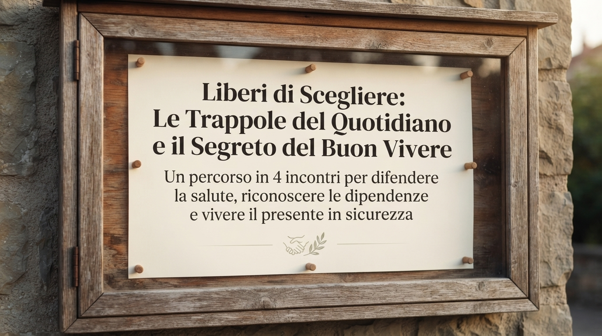
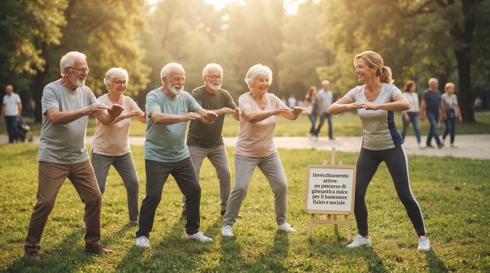
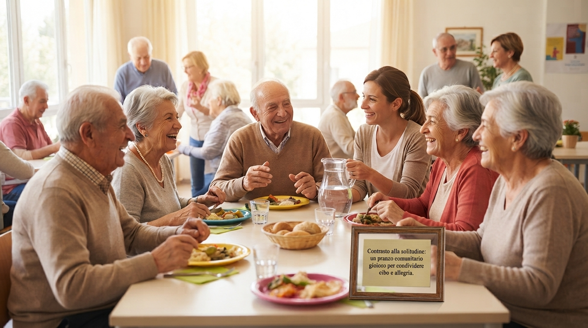
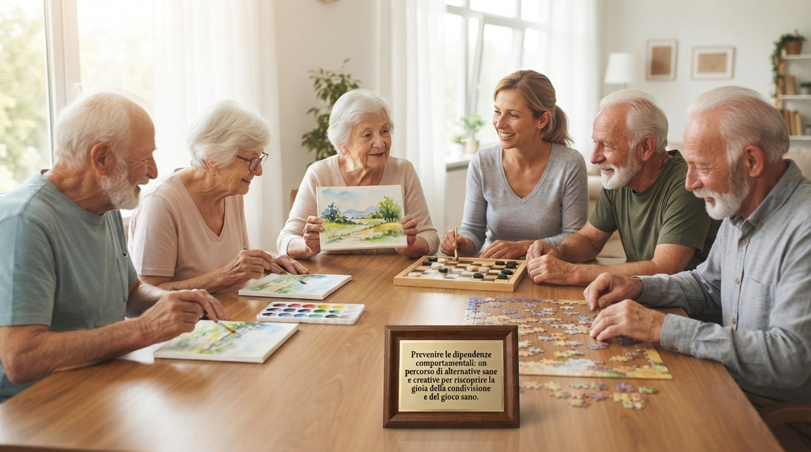
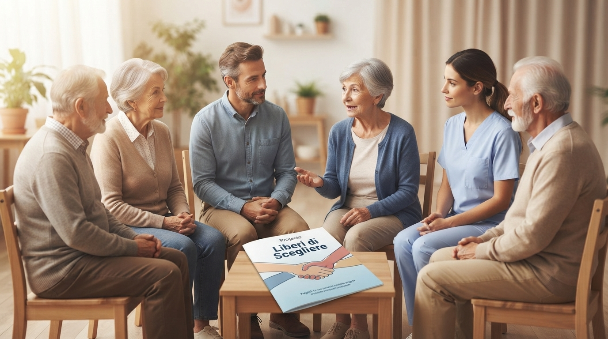

Liberi di Scegliere
“Un percorso in 4 incontri per difendere la salute, riconoscere le dipendenze e vivere il presente in sicurezza”.
Un progetto sulle dipendenze nella terza età che affronta i problemi emergenti come l'abuso di alcol, l'uso improprio di farmaci e il gioco d'azzardo patologico tra gli anziani.

Informare gli anziani, le famiglie e i caregiver sui rischi legati a sostanze legali e nuove dipendenze.

Ridurre l'isolamento sociale, spesso fattore scatenante del consumo problematico in età avanzata.
Utilizzare la formazione come scudo contro la depressione e l'isolamento.
Rendere le persone consapevoli dei rischi legati all'automedicazione e alle interazioni farmaco-alcol.
Riconoscere i primi segnali del gioco d'azzardo o dell'uso compulsivo degli smartphone.
Tocca il titolo di un modulo per leggerne il contenuto.


Ogni incontro prevede una parte di esposizione interattiva e 30 minuti di dibattito/domande. I giorni e gli orari degli incontri verranno comunicati successivamente.
Dr. Giovanni Utano Medico-Psicoterapeuta, Dirigente presso il Ser.D. di Milazzo-Lipari dell'ASP 5 di Messina.